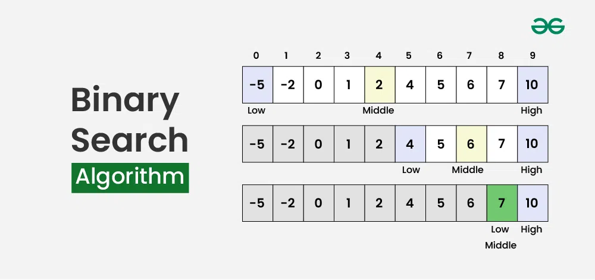

Binary Qidiruv
Staklar va navbatlar — dasturchilarga ma'lumotlarni samarali boshqarish va qayta ishlashga yordam beradigan ma'lumotlar tuzilmalaridir. Ularning ikkalasi ham chiziqli ma'lumotlar tuzilmalaridir, lekin ular ma'lumotlar elementlarini qanday tartibga solishda farqlanadi
Illustration
Massiv:
Massiv - bu ketma-ket xotira joylarida saqlangan elementlar to'plamidir. G'oya shundan iboratki, bir xil turdagi bir nechta elementlarni birgalikda saqlash kerak. Bu har bir elementning joylashuvini hisoblashni osonlashtiradi, chunki asosiy qiymatga (odatda massivning birinchi elementining xotira joylashuvi bilan belgilanadi) faqat bitta ofset qo'shish kifoya. Diagramma orqali massiv tasviri quyida keltirilgan:

Binary Search Algorithm is a searching algorithm used in a sorted array by repeatedly dividing the search interval in half. The idea of binary search is to use the information that the array is sorted and reduce the time complexity to O(log N).

Binary Search Algorithm
Table of Content
- What is Binary Search Algorithm?
- Conditions to apply Binary Search Algorithm in a Data Structure
- Binary Search Algorithm
- How does Binary Search Algorithm work?
- How to Implement Binary Search Algorithm?
- Complexity Analysis of Binary Search Algorithm
- Applications of Binary Search Algorithm
- Advantages of Binary Search
- Disadvantages of Binary Search
- Frequently Asked Questions(FAQs) on Binary Search
What is Binary Search Algorithm?
Binary search is a search algorithm used to find the position of a target value within a sorted array. It works by repeatedly dividing the search interval in half until the target value is found or the interval is empty. The search interval is halved by comparing the target element with the middle value of the search space.
Conditions to apply Binary Search Algorithm in a Data Structure
To apply Binary Search algorithm:
- The data structure must be sorted.
- Access to any element of the data structure should take constant time.
Binary Search Algorithm
Below is the step-by-step algorithm for Binary Search:
- Divide the search space into two halves by finding the middle index “mid”.
- Compare the middle element of the search space with the key.
- If the key is found at middle element, the process is terminated.
- If the key is not found at middle element, choose which half will be used as the next search space.
- If the key is smaller than the middle element, then the left side is used for next search.
- If the key is larger than the middle element, then the right side is used for next search.
- This process is continued until the key is found or the total search space is exhausted.
Binary Search Visualizer
How does Binary Search Algorithm work?
To understand the working of binary search, consider the following illustration:
Consider an array arr[] = {2, 5, 8, 12, 16, 23, 38, 56, 72, 91}, and the target = 23.
How to Implement Binary Search Algorithm?
The Binary Search Algorithm can be implemented in the following two ways
- Iterative Binary Search Algorithm
- Recursive Binary Search Algorithm
Given below are the pseudocodes for the approaches.
Iterative Binary Search Algorithm:
Here we use a while loop to continue the process of comparing the key and splitting the search space in two halves.
Program to implement iterative Binary Search
// A iterative binary search function. It returns
// location of x in given array arr[l..r] is present,
// otherwise -1
function binarySearch(arr, x)
{
let low = 0;
let high = arr.length - 1;
let mid;
while (high >= low) {
mid = low + Math.floor((high - low) / 2);
// If the element is present at the middle
// itself
if (arr[mid] == x)
return mid;
// If element is smaller than mid, then
// it can only be present in left subarray
if (arr[mid] > x)
high = mid - 1;
// Else the element can only be present
// in right subarray
else
low = mid + 1;
}
// We reach here when element is not
// present in array
return -1;
}
arr = new Array(2, 3, 4, 10, 40);
x = 10;
n = arr.length;
result = binarySearch(arr, x);
if (result == -1)
console.log("Element is not present in array")
else
{
console.log("Element is present at index "
+ result);
}
Time Complexity: O(log N)
Auxiliary Space: O(1)
Recursive Binary Search Algorithm:
Create a recursive function and compare the mid of the search space with the key. And based on the result either return the index where the key is found or call the recursive function for the next search space.
JavaScript program to implement recursive Binary Search
// A recursive binary search function. It returns
// location of x in given array arr[low..high] is present,
// otherwise -1
function binarySearch(arr, low, high, x)
{
if (high >= low) {
let mid = low + Math.floor((high - low) / 2);
// If the element is present at the middle
// itself
if (arr[mid] == x)
return mid;
// If element is smaller than mid, then
// it can only be present in left subarray
if (arr[mid] > x)
return binarySearch(arr, low, mid - 1, x);
// Else the element can only be present
// in right subarray
return binarySearch(arr, mid + 1, high, x);
}
// We reach here when element is not
// present in array
return -1;
}
let arr = [ 2, 3, 4, 10, 40 ];
let x = 10;
let n = arr.length
let result = binarySearch(arr, 0, n - 1, x);
if (result == -1)
console.log("Element is not present in array");
else
console.log("Element is present at index " + result);
Complexity Analysis of Binary Search Algorithm
- Time Complexity:
- Best Case: O(1)
- Average Case: O(log N)
- Worst Case: O(log N)
- Auxiliary Space: O(1), If the recursive call stack is considered then the auxiliary space will be O(logN).
Applications of Binary Search Algorithm
- Binary search can be used as a building block for more complex algorithms used in machine learning, such as algorithms for training neural networks or finding the optimal hyperparameters for a model.
- It can be used for searching in computer graphics such as algorithms for ray tracing or texture mapping.
- It can be used for searching a database.
Advantages of Binary Search
- Binary search is faster than linear search, especially for large arrays.
- More efficient than other searching algorithms with a similar time complexity, such as interpolation search or exponential search.
- Binary search is well-suited for searching large datasets that are stored in external memory, such as on a hard drive or in the cloud.
Disadvantages of Binary Search
- The array should be sorted.
- Binary search requires that the data structure being searched be stored in contiguous memory locations.
- Binary search requires that the elements of the array be comparable, meaning that they must be able to be ordered.
Frequently Asked Questions(FAQs) on Binary Search
1. What is Binary Search?
Binary search is an efficient algorithm for finding a target value within a sorted array. It works by repeatedly dividing the search interval in half.
2. How does Binary Search work?
Binary Search compares the target value to the middle element of the array. If they are equal, the search is successful. If the target is less than the middle element, the search continues in the lower half of the array. If the target is greater, the search continues in the upper half. This process repeats until the target is found or the search interval is empty.
3. What is the time complexity of Binary Search?
The time complexity of binary search is O(log2n), where n is the number of elements in the array. This is because the size of the search interval is halved in each step.
4. What are the prerequisites for Binary Search?
Binary search requires that the array is sorted in ascending or descending order. If the array is not sorted, we cannot use Binary Search to search an element in the array.
5. What happens if the array is not sorted for binary search?
If the array is not sorted, binary search may return incorrect results. It relies on the sorted nature of the array to make decisions about which half of the array to search.
6. Can binary search be applied to non-numeric data?
Yes, binary search can be applied to non-numeric data as long as there is a defined order for the elements. For example, it can be used to search for strings in alphabetical order.
7. What are some common disadvantages of Binary Search?
The disadvantage of Binary Search is that the input array needs to be sorted to decide which in which half the target element can lie. Therefore for unsorted arrays, we need to sort the array before applying Binary Search.
8. When should Binary Search be used?
Binary search should be used when searching for a target value in a sorted array, especially when the size of the array is large. It is particularly efficient for large datasets compared to linear search algorithms.
9. Can binary search be implemented recursively?
Yes, binary search can be implemented both iteratively and recursively. The recursive implementation often leads to more concise code but may have slightly higher overhead due to recursive stack space or function calls.
10. Is Binary Search always the best choice for searching in a sorted array?
While binary search is very efficient for searching in sorted arrays, there may be specific cases where other search algorithms are more appropriate, such as when dealing with small datasets or when the array is frequently modified.
Binary Search Example
function binarySearch(arr, val) {
let start = 0;
let end = arr.length - 1;
while (start <= end) {
let mid = Math.floor((start + end) / 2); // O‘rta elementni topamiz
if (arr[mid] === val) {
return mid; // Qiymat topilsa, uning indeksini qaytarish
} else if (arr[mid] < val) {
start = mid + 1; // O'ng tomondan izlash
} else {
end = mid - 1; // Chap tomondan izlash
}
}
return -1; // Agar qiymat topilmasa, -1 qaytariladi
}
// Misol uchun, bizda tartiblangan massiv bor
let sortedArray = [1, 3, 5, 7, 9, 11, 13, 15, 17, 19];
// Qidiriladigan element
const seekElement = 7;
// binarySearch funksiyasini chaqiramiz
console.log(binarySearch(sortedArray, seekElement)); // Natija: 3